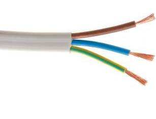
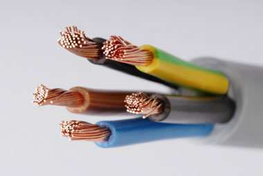
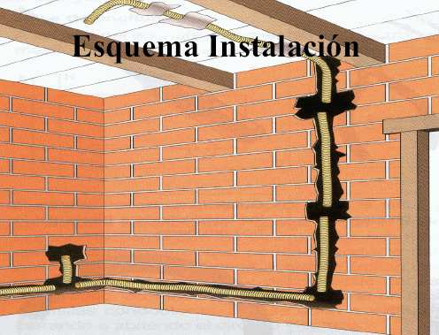
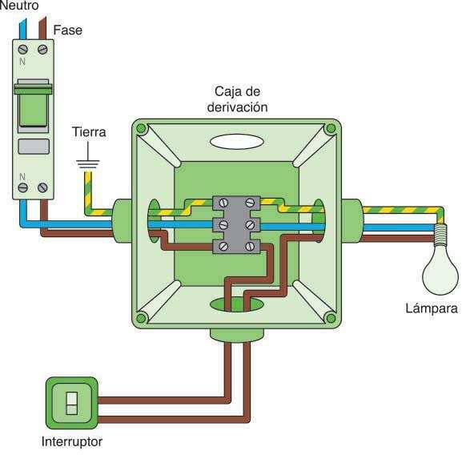
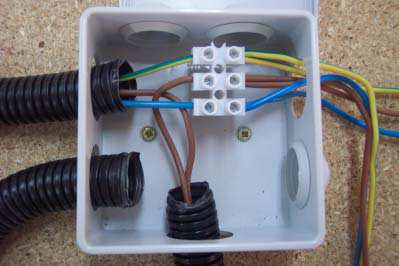
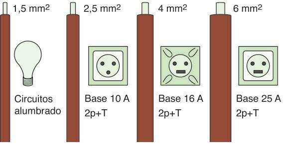

4.3. Cableado de la instalación interior
Todos los circuitos independientes de la vivienda se alimentan mediante dos conductores (fase y neutro), que transportan una corriente alterna monofásica a baja tensión (230V). A ellos se les añade el conductor de conexión a la red de tierra del edificio. Estos conductores son de cobre con un aislamiento de plástico.
|  |  |
| CABLES PARA CORRIENTE MONOFÁSICA | CABLES PARA CORRIENTE TRIFÁSICA |
- Conductor de fase: Es el conductor activo que lleva la corriente desde el cuadro eléctrico a los distintos puntos de luz y tomas de corriente de la instalación. El color de su aislamiento puede ser marrón, negro o gris.
- Conductor neutro: es el conductor de retorno que cierra el circuito, permitiendo la vuelta de la corriente desde los puntos de luz y tomas de corriente. El color de su aislamiento es siempre azul.
- Conductor de tierra: conductor que normalmente no lleva corriente si el circuito funciona bien. Está conectado a la red de tierra del edificio, y sirve para desalojar posibles fugas o derivaciones de corriente hacia los electrodos de tierra. Su aislamiento presenta color amarillo y verde.
Los conductores de cada circuito independiente parten de su correspondiente PIA en el cuadro eléctrico, y recorren la vivienda alojados en el interior tubos corrugados de PVC empotrados en la pared.

A lo largo del recorrido, la alimentación de cada receptor (puntos de luz y tomas de corriente) se realiza por derivación de los conductores principales del circuito independiente, en cajas de registro. Las cajas de registro (cajas de derivación) son cajas de plástico donde se realizan conexiones y empalmes de los cables eléctricos. Para que el empalme se haga correctamente, se deben utilizar regletas o clemas de conexión.
La sección (grosor) de los cables conductores depende de cada circuito. Como se ve en la imagen, el circuito independiente C1 destinado a iluminación requiere de cables de sección 1,5 mm2 , mientras que el circuito independiente C3 que alimenta las tomas de cocina y horno requiere de conductores de sección 6 mm2.
La sección de los conductores se elige en función de la intensidad de corriente a transportar: a más intensidad, mayor es la sección del cable, como se puede ver en el siguiente gráfico:
